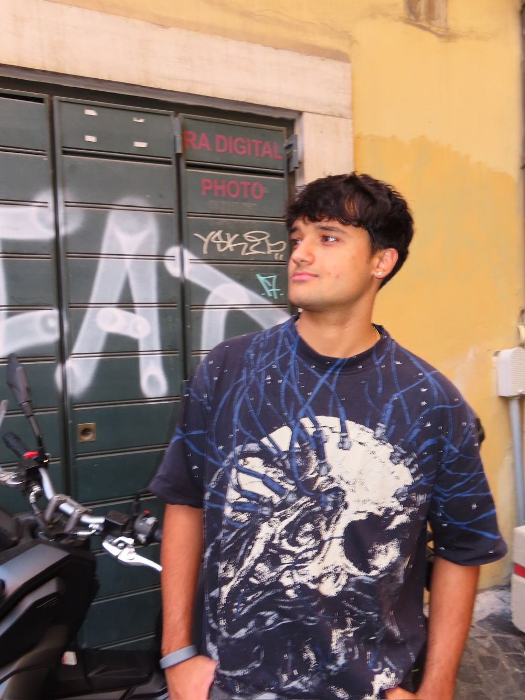
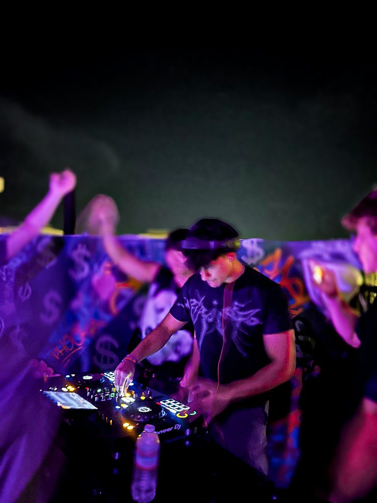
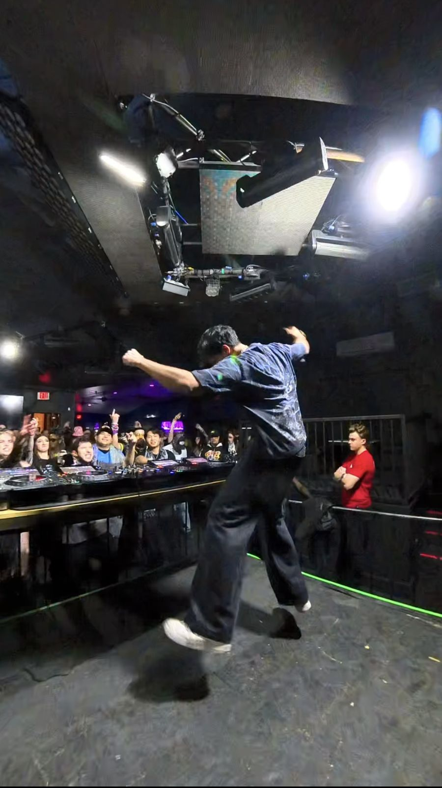
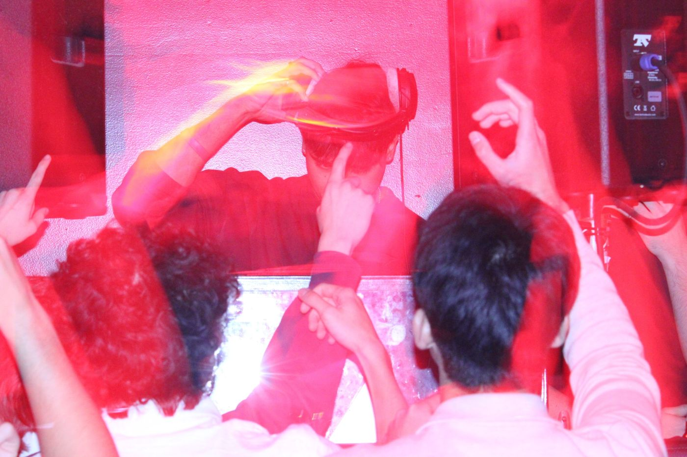

Hip-hop classics reimagined with experimental bass.
Tucson, AZ and Chicago, IL. Pronounced "sin," rhymes with "win."

When SINH moved to Arizona in 2023, he fell in love with the EDM scene instantly but missed the rap culture he grew up on. Taking inspiration from Tape B and Whethan, he blended years of beatmaking and hardstyle experience into a sonic world of his own: SINH City.
His first notable support slots came in 2025, opening for Rae Sremmurd and Ship Wrek, followed by Borgore in January 2026. The next month, he released his remix of Kanye West's "Father Stretch My Hands Pt. 1," now past 100K plays, and Papajay brought him on stage to debut it live.
SINH has kept that momentum going, sharpening his sound and releasing more remixes on SoundCloud, where he now pulls 50,000+ monthly plays. He has collaborated with Bonkers, Unnevn and Z3lla, received support from Adventure Club, Avello, M?stic and more, and performs across Arizona and Chicago.
Debut project Sinh City Vol. 1, a 4-track remix album, out February 2026.
Support from
Collaborations
Played at


